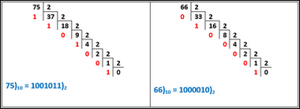
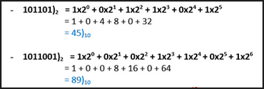
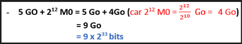

Correction — Correction

Correction N°1
1- Combien d’informations sont représentées par 8 bits ?
256 informations
2- Qu’est-ce qu’une information binaire ?
Une information binaire est un groupement des ‘0’ et des ‘1’
3- Qu’est-ce qu’une mémoire vive ?
C’est une mémoire principale d’un ordinateur, elle est accessible en lecture et écriture, dans cette mémoire sont chargés et exécutés tous les programmes.
Cette mémoire est dite volatile c’est-à-dire son contenu peut être modifié et s’efface quand la machine n’est plus sous tension.
4- Citer les caractéristiques principales d’un microprocesseur
• la marque
• La fréquence en GHz
• la taille des données qu’il est capable de traiter en bits
• La taille de la mémoire cache en Mo
• Le nombre de cœurs
5- Expliquer à l’aide d’un tableau les différences entre un système binaire et un système décimal
6- Citer les différents connecteurs des cartes d’extension en précisant les composants correspondants
Des connecteurs comme : AGP, PCI, PCI Express permettant de connecter la carte son, la carte graphique, la carte réseau, ……
7- effectuer les calculs suivants:
- 75)10 = ……..)2 et 66)10 = ………..)2

- 101101)2 = ……..)10 et 1011001)2 = ………..)10

- 5 GO + 212 M0 = ……..bits
